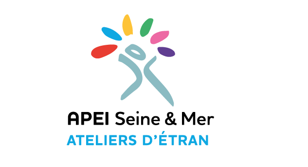

Livret d'accueil ESAT
Vidéo institutionnelle & pédagogique
À propos du projet
L'ESAT Les Ateliers d'Etran (situé près de Dieppe) accueille des personnes en situation de handicap pour les accompagner dans leur insertion sociale et professionnelle à travers différents ateliers de travail (cuisine, espaces verts, menuiserie, fabrication de caramel, etc.).
Afin de faciliter l'accueil et l'intégration des nouveaux travailleurs, j'ai réalisé une version vidéo dynamique et hautement accessible du livret d'accueil de l'ESAT. L'enjeu principal de ce projet était de traduire un document administratif et réglementaire dense en un support audiovisuel vivant, engageant et parfaitement adapté aux principes du FALC (Facile À Lire et à Comprendre).
La vidéo s'appuie sur une captation immersive au cœur des différents ateliers pour guider visuellement le travailleur. Elle explique de façon claire, bienveillante et accessible les droits, les devoirs ainsi que le fonctionnement quotidien de l'établissement.
Voir les vidéos
Version courte (FALC)
Version longue (FALC)
Processus créatif
Cadrage & FALC
Analyse du livret d'accueil papier d'Etran et simplification des textes pour respecter les normes FALC. Rédaction du script et du conducteur vidéo.
Captation bienveillante
Tournage dans les différents ateliers de l'ESAT. Captation des gestes professionnels et de l'environnement de travail avec bienveillance et discrétion.
Voix-off & Montage
Enregistrement d'une voix-off posée, claire et rassurante. Montage dynamique mais structuré sur Premiere Pro pour faciliter l'assimilation cognitive.
Sous-titrage & Accessibilité
Intégration de sous-titres grand format très lisibles et contrastés pour assurer une accessibilité maximale à tous les publics.